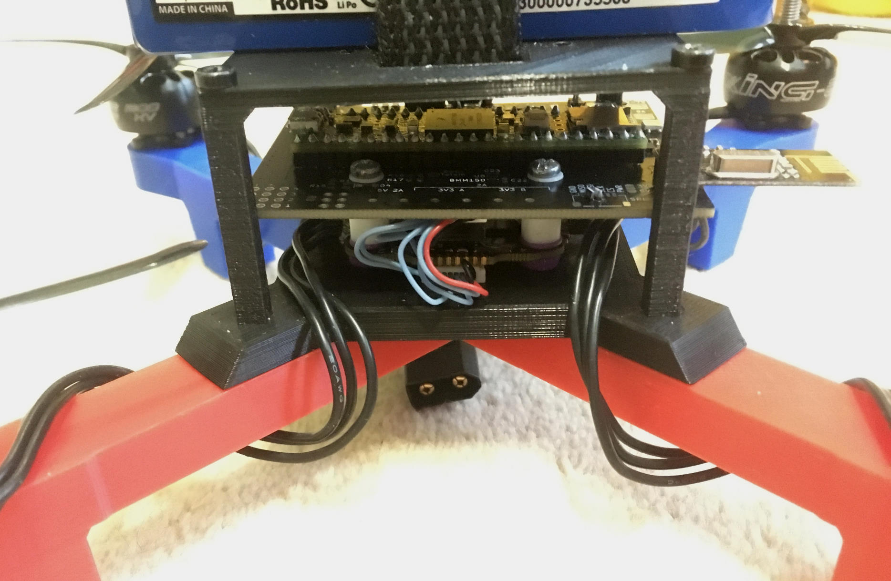
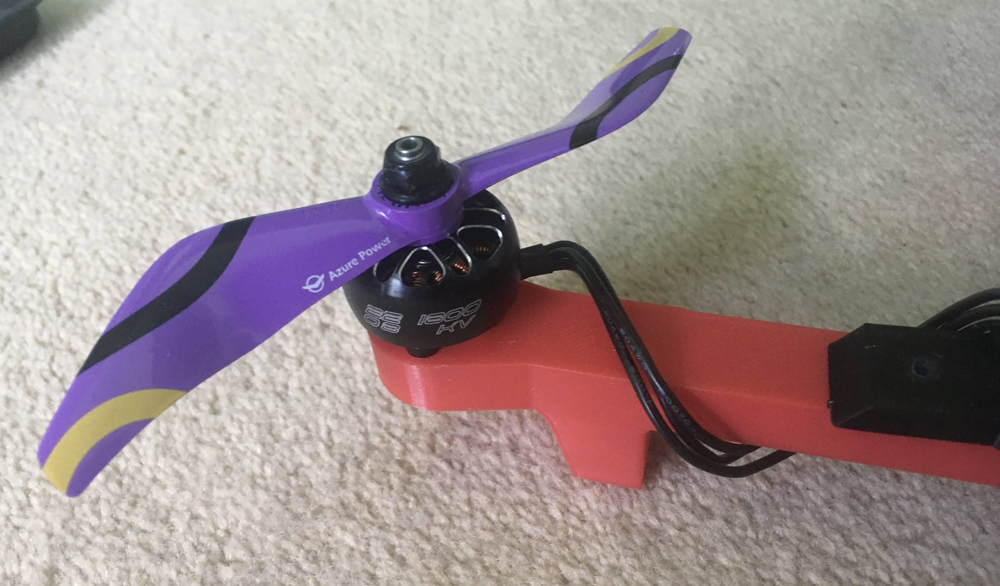
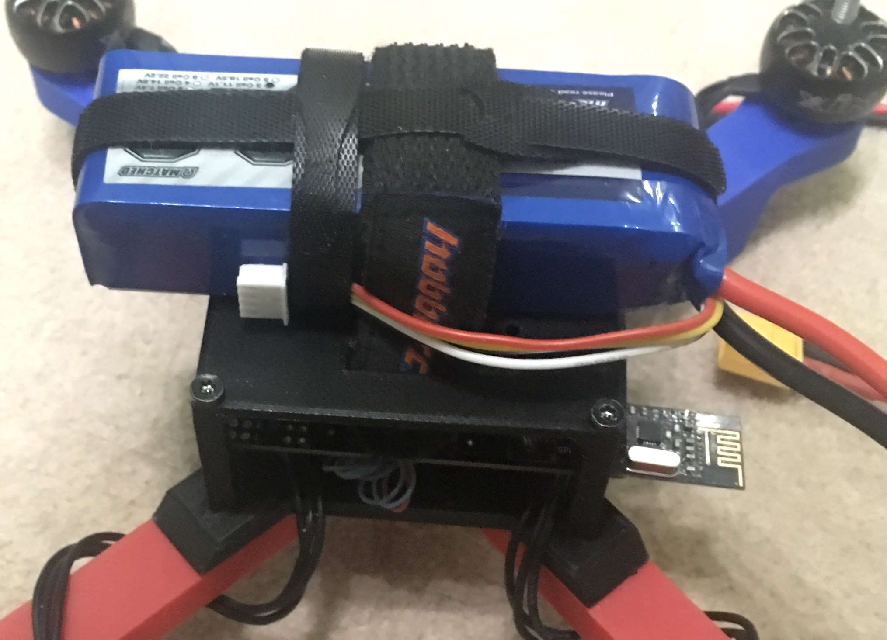
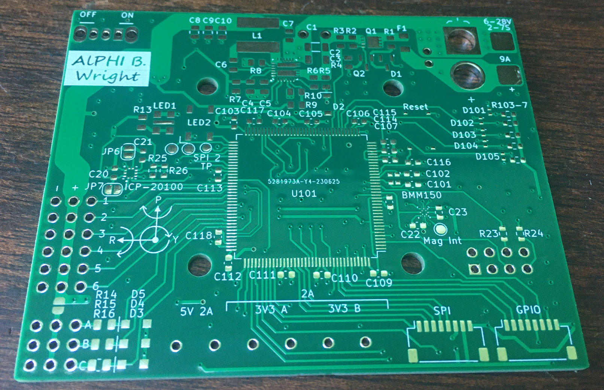
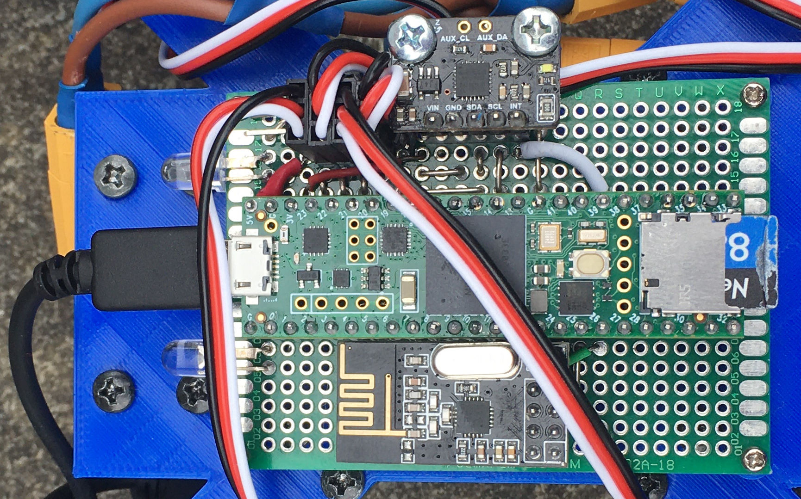

Description
The aim of this project is to design and build a quadcopter drone where I would use as few pre-made components as possible.
This includes creating the software and circuit board of the flight controller, designing a frame that can be made with no tools and choosing pre-made components (e.g. motors & propellers) which work well together for optimal performance.
I used an iterative approach to the development.
This allowed me to test different ideas to gain a greater understanding of how different parameters affected performance in a real world environment.
This approach enabled me to be flexible in the design to get the best optimisation possible.
Skills
When I started this project, I knew very little about how drones worked and I enjoyed learning about different components and how they work together.
- One of the most important skills I gained is what the process of creating and developing projects like this entails. Alongside this I learned how to approach not only the build but also how to solve problems and set-backs during the development.
- I greatly improved at finding the causes and solutions to problems and how to map out potential issues to avoid them.
- Collecting and interpreting data to inform decisions and troubleshoot issues allowed me to recognise aspects to be changed that would not be visible without that data.
- Segmenting the project allowed different parts to be worked on separately without having to change other parts, for example: different files of code working together and modular 3D printed parts. This can lead to use of these segments on other projects, some parts being specifically designed for multipurpose use.
I learned general skills that can be used in any project, listed below:
- Design and assembly of printed circuit boards (PCBs), including switching regulators.
- Designing 3D printed objects to withstand different environments and stresses.
- Reading and using datasheets to influence component selection and aid in the use of components.
- Optimising code for speed and storage space.
- Understanding how different sensors work and how to use them. Additionally I learned about optimising using filters and optimising them e.g. Kalman filters.
- What PID control is and how to use it.
Here are the more specific skills used in the project:
Design
- The frame was 3D printed to allow for easy iteration
- Strength tests were performed to get optimal shape and print settings
- Flight controller PCB was designed to fit an STM32 in a reasonable footprint
- Flight controller designed for future use through GPIO and software
- Flight controller software includes interfacing with sensors and a PID loop
- Easily configurable through a json file
- Flight data is logged during flight and can be displayed with grafana
- Components were tested to find optimal configuration
Build
- Iterative development allowed for ideas to be validated or discarded quickly
- Flight controller started off as a basic breadboard, then evolved into a custom PCB
- The software went through multiple iterations to find what was neede to make the most elegant solution
- The manufacturing of the frame and assembly was simple due to its design
Deliver
- Learned how each aspect of the drone works and how they fit together
- Flight controller software is reliable and can be expanded for use in other projects
- The controller and radio works consistently
- The drone's behaviour is predictable which allows for easy troubleshooting and development
- All the components work together to allow the drone to fly smoothly
Closer Look
The drone flies by spinning four propellers with brushless motors.
Due to the un-aerodynamic shape of quadcopters they are not stable in the air (unlike planes) meaning there needs to be constant adjustments made to the speed of the motors.
The flight controller uses sensors to get the state of the drone (eg rotation) then calculates what speeds the induvidual motors need to spin at, in order to effectively control the drone.
Then the flight controller sends a signal to the electronic speed controllers (ESCs) to set the motor speed.
Diagram showing the main components of the drone and how they are connected:
Different sections of the project are: flight controller, frame, propulsion and main circuit, explained below.
Some pictures of the latest version of the drone:

An older versions of my drone:
Frame
The frame is the superstructure that all parts of the drone are attached to. It must be rigid and withstand crashing whilst also not being too heavy for the drone.
It is fully 3D printed out of PLA which allows me to not be restricted by size or shape of stock materials and is more consistant than hand tools.
This is the centre of my drone where the four arms, battery holder and electronics are attached to.
I decided to split up the arms from the centre partly due to the maximum size of the printer and it also allows arms to be swapped out if they are damaged or need upgrading.
The arms main function is to hold the motor and propellers, they also have landing legs on the bottom of them.

This is the battery holder which also doubles as a cover for the electronics.
It is placed on top of the drone to help put the centre of mass as close to the propellers as possible which gives them more control so the drone can be more stable.

Flight Controller
The flight controller is the brain of the drone; its main function is to control the state of the drone.
I created the printed circuit board (PCB) and wrote custom software to use the hardware on the PCB and control the devices connected to it.
I designed the board so it can control a large variety of devices therefore I would only need to develop one board for multiple projects. The name of the board is All Purpose Hardware Interface Board (AlPHI B).
It uses an STM32H7 microcontroller because it has a large amount of pins, good processing power and lots of supported software.
The board has multiple sensors: the accelerometer, gyroscope and magnetometer are all used to get the orientation and a barometer for altitude.
Software Loop
The drone knows its state at all times, it knows this by reading the separate sensor values then combining them together to get the state of the drone.
A kalman filter is applied to take out most of the noise from the signal.
It then calculates the difference, or deviation, of where it should be and where it is. It uses deviations to generate corrective commands in order to get the drone to the correct state.
They are generated by using PID control which uses proportional, integral and derivative calculations. Using all three together allows for accurate control.
The user can control where the drone should be by using a controller.
The corrective commands are sent to the speed controller using OneShot125. This is a protocol which sends a pulse between 125 and 250 microseconds long allowing for a maximum rate of 4kHz.
This has a higher refresh rate than normal servo PWM (max 500hz) and is much simpler to implement than digital protocols eg DShot.
Configuration and Logging
The flight controller has an SD card which does two things: log data and load settings.
The configuration can be loaded from a json file containing settings for sensors, motors, PID settings and more. This is very useful because the settings are in a clear format and it allows the settings to be changed without having to re-compile and upload any code.
Each loop data is written to a log on an SD card. Info such as time, attitude, PID values and input are logged. This is very useful to figure out what went wrong/underperformed and allows for diagnosing and testing of features.
The values are stored in binary rather than text. This is due to conversion from variables to text takes a lot of time, also it saves space which means longer flights can be logged and writing less data takes less time.
After each flight the data is converted into text and saved to a csv file. This can be imported into Grafana to show graphs like the one below:
Voltage Regulation and Protection
There are two voltage regulators on the board for 5V and 3.3V. These have a large voltage input range (6 - 28V) and high current rating (10A), more than other flight controllers, to allow for most setups to be compatible.
Switching regulators were used because of higher maximum current and higher efficiency throughout the entire input range with the downside of a more complicated PCB design.
I need the large current capacity to drive motors and other devices. This means during the PCB design I had to take into account the trace thickness and via size.
The board has multiple protection features such as reverse polarity protection, fuses (for the whole board and for induvidual components) and diodes to protect from overvoltage from incorrect wiring.
Additional Features
The flight controller includes some extra features and expandability, allowing potential use in other projects.
These features include output such as an RGB LED which shows the status of the drone. There is also a buzzer which can be used to alert people around the device or to help find it.
Up to 13 motors can be attached to the board at one time
The high current screw terminals control three channels with up to 2 amps each. For example they could be used for high power LEDs as headlights.
The board has four connectors with a total of 17 GPIO pins. These connectors also have one I2C, one SPI and two UART channels for external devices eg GPS modules.
Printed Circuit Board
Empty PCB of the flight controller:

The front and back of the flight controller:
Schematic:
PCB in KiCad:

Propulsion
The propulsion includes the ESCs, motors and propellers.
The ESC sets the motor speed according to the signal sent from the flight controller.
I chose a 4-in-1 ESC which is able to control all four brushless motors which spin the propellers.
The ESC with all four motors soldered to it:
Mounted motor with propeller attached:
Creating the Project
Each section of the project was developed in parallel so they were improved to both better suit their own function and to help improve other sections.
This means each section has its own version number and may not line up with other versions.
I grouped the flight tests into series, each series having a purpose that it wanted to achieve.
- After deciding the initial idea of the project I ordered the cheapest ESC, propeller and motor package deal I could find to use for the initial development.
I did this so I would not waste money on getting the wrong equipment and it would not matter if this cheap equipment got damaged. - Then I tested parts induvidually to get the design of the first prototype.
- I could now make and test the first prototype. I did this to sort out any major issues and to find out what is needed for a proper drone prototype.
This included connection tests, running software without motors attached and the first series of test flights. - For the second test series I tuned values for performance and see what parameters affect how the drone flies.
After this test series I knew more about how the drone works and established that I needed to improve the code for better performance rather than trying to tune values with the current code. - I created a jig that only allowed the drone to rotate in one axis so I could test induvidually. It also allowed me to see how the drone handles long duration flight.
These tests proved that the drone can handle longer flights but could not give me much more than that as I needed to fly with a proper centre of gravity. - For the third series of tests I improved reliability and performance to prepare for the first fully functional prototype.
I now had reliable code and the knowledge of what exactly was needed for a fully functioning prototype. - During test series 4 I redesigned and upgraded every section in order to make a fully functioning and better performing drone.
An overview of the development process:
Flight Controller (electronics)
Version 1
- This version used a Teensy 3.6 connected to an MPU6050 for the inertial measurement unit (IMU) and an nRF24l01 for the radio.
- I chose the MPU6050 as it was widely used so I could find lots of support online for it and it could handle the vibrations of the drone.
- An nRF24l01 was used because it is light and small while also being very cheap. It connects to a wireless controller which is its own project. Info can be found here.
- It used the battery elimination circuit (BEC) of one of the ESCs as the power supply. The BEC is a voltage regulator inside the ESC which is convenient but the voltages from different BECs can vary and BECs from cheap ESCs can be unreliable.
- The LEDs sometimes drew too much current for the Teensy which damaged one.
-
Version 1 of the flight controller:

The first version of the flight controller connected the modules together on a perfboard.
Version 2
- A Teensy 4.1 was used which was cheaper and gave a large performance increase, mostly due to the higher clock speed (180MHz vs 600MHz).
- A USB regulator was used instead of the BEC to be more reliable and output the same voltage no matter the ESC. This needs more wiring and is heavier but there is enough margin to handle that.
- More headers and pins were added for prototyping.
- I tested using a dropout regulator to power the Teensy.
- A transistor was used to drive the LEDs fixing the over current issue.
Version 2 is a small incremental upgrade from version 1.
- When both the battery and USB are plugged in at the same time it destroys the Teensy.
- Plugging the speed controller incorrectly sends too high of a voltage to the Teensy pins, destroying the board.
- Due to the MPU6050 being mounted separately from the rest of the board, and only with two screws, there were alignment issues when setting the zero orientation. Securing it to the rest of the flight controller properly would fix this.
- The MPU6050 uses I2C to send data so has a maximum update rate of 1kHz, less than the update rate of the software, plus there are newer, better IMUs.
Some new issues appeared when using this board:
-
Version 2 of the flight controller:
-
The voltage regulator with a splitter attached:
Version 3
- I wanted to replace the Teensy 4.1 with an STM32H7 or STM32F7, however none that I wanted were available, so I used the Teensy.
- The sensors were upgraded, the MPU6050 was replaced by two sets of accelerometer and gyroscope sensors (ICM42688 and LSM6DSOXTR). They have better specifications in all areas including less noise, higher update rate and lower cost.
- A barometer was included to help determine altitude and a magnetometer to measure real world orientation.
- I fixed the issue of having the battery and USB connected at the same time by being able to select which voltage source I want to use.
- The ESC connectors were changed significantly. I replaced the old connectors with a connector for a 4 in 1 ESC.
- I then added in 2 extra ESC connectors with protection against incorrect wiring, plus five servo connectors. These will allow use of this flight controller on other devices eg planes where servos are used for the control surfaces.
For version 3 I did a complete redesign because using a perfboard limited me to using pre made modules which lead me to the decision of making a custom PCB.
I kept the size of the board roughly the same but I included many more features, learning from what was lacking from previous versions.
- To let the user know what state the drone is in the board has an RGB LED, each colour corresponding to a state. A buzzer was also added which could be used to alert the user or help find the drone.
- Instead of having the bright LEDs connected directly to the board I have three screw terminals which can handle 2 amps each so different electronics can be connected eg bright LEDs or nichrome wire.
- Other connectors were added for connecting other devices with either I2C, SPI or UART. A GPS connector was added for future use.
- The board needs its own voltage regulator because ESCs may have BECs with the wrong voltage if any. It needs to handle high current so I chose to use a switching regulator which is more complex than a linear regulator but has a higher voltage range.
- The regulator circuit includes reverse voltage and over current protection.
-
Version 3 of the flight controller:
Version 4
- The connectors were added on and improved. The amount of pins went from 8 to 17 GPIO pins and were moved to the same location.
- Temination resistors were added on data lines that needed them, such as for the radio and the ESC.
- On the previous design, both the magnetometer and barometer had issues so both were updated with a new design.
- Three ESC and servo connectors were added and they were lined up parallel to each other, unlike the old board.
The Teensy boards were sometimes unreliable so I switched to an STM32H723ZET6. This gave me more pins and a smaller board profile, but required a redesign.
Flight Controller (software)
Version 0.1
- I made some basic code to test radio communication and ESC control to test if the assembled system works.
Version 0.2
- I implemented code to read the MPU6050 so I could control the attitude of the drone.
- Then I added proportional control of the roll and pitch axis. This means that the change in motor speed is proportional to the differene between the wanted and current angle.
- I added logging which allowed me to see what status the drone was in during tests which is extremely useful for diagnoses of problems.
- This code was used before the documented test series and did not work well. There were some issues with immediate flipping and the drone was generally not in control.
- However these tests were safe because there was an abort button and the drone was always close to the ground and spent very few seconds in the air (if at all).
Version 0.3
- Due to the unreliability of the drone I implemented better abort modes. I added an abort function which is called when the abort button is pressed, after radio loss and when the drone is flipping.
- This abort mode increased the saftey of the drone as it would do this without any user input, it works by shutting off the motors and flashing the lights.
- I added some general improvements to help with the stability, including better calculation of ESC values.
- These changes allowed the drone to remain upright some of the time and gave a good code base to work on.
Version 0.4
- A better MPU6050 library was used which reduced noise by using the Digital Motion Processor (DMP). It had the disadvantage of a maximum update rate of 200Hz but was worth the reduced noise and was not too much of a limitation compared to the update rates of the rest of the system.
- I tried using a simple moving average (SMA) for pitch and roll which removed most of the noise with a noticeable lag time. A small percentage of the attitude control used the SMA.
- Tuning and tried different values to learn how the code influences the flight.
- Code for a standby mode was written which temporarily turns off the motors.
- The program added a header to the log which showed the settings used for the flight and what data is in which column. This is very useful when looking back at older logs and determining what affected the flight.
- I was able to get the loop time from ~14ms down to 3-5ms by using a better SD card, formatting the SD card properly and using a Teensy 4.1 rather than a Teensy 3.6.
- Drone now able to control the attitude somewhat proving that my approach to handling attitude control was working.
Version 0.5
- Changed the x and y axes to roll and pitch and renamed some other variables. This improved readability by making the variables clear to understand.
- I also restructured the code slightly and added more comments (such as comments explaining variables).
- An important feature I added was integral and derivative control, rather than having just proportional. This helps with finer control and lessens overshoots and oscillations.
- For the derivative control I used the SMA to calculate the rotation rate and adjust the motor speed to counteract it.
- I used a faster library to write to the SD card alongside minimising the use of strings which helped lower the loop time from 3-5ms to 1-2ms.
- When writing to the motors I used a function that gave me 1000 steps of control, compared to the old function allowing 180, giving me finer control.
- Now the drone can do a mostly stable hover (±5 degrees peak deviation).
Version 0.9
- This version was intended to make the code easy to work with and understand. It also worked on what the last version was lacking to achieve proper flight performance eg aiming for a 4kHz update rate.
- Instead of having one long file I split the code into different files, each with its respective class: radio, IMU, logger, motor controller and PID controller.
- The code was made much more modular by using the classes, plus different libraries and hardware can be swapped out by changing one line of code.
- I changed variables to use understandable units (eg rotation rate (rRate) now measured in degrees per millisecond). I also removed variables that depend on loop time length.
- I used Doxygen to generate a web page which explains all of the classes attributes and functions.
- Simplified integral and derivative calculations for performance and readability.
- Yaw stabilisation was added along with seperate PID gains for each axis. This helps because the mass can be distributed differently between the axes.
- In order to reduce noise from the sensor data a kalman filter is applied to it, and a new MPU library was added which uses a computationally inexpensive algorithm to convert the raw data to an angle.
- The logging was upgraded for speed and better user experience. I was able to do this by logging the data in binary rather than as text, this gives two advantages: no strings need to be used which would be slow and less storage is needed. Old logs are now backed up and settings can be loaded from a file instead of having to re-upload the program.
- The ESC protocol was changed from using 1-2ms pulses to using OneShot125 which is 8 times faster and the code I wrote to send the signals is more accurate than the old code.
Version 1.0
- Switching between libraries is now possible by changing one line of code, giving flexibility when compiling for different hardware.
- I added compatibility for STM32 microcontrollers, including adding libraries and adding a system to deal with pin assignments.
- A large feature that I added was using a json file to set the configuration of the drone. This can set nearly everything and makes quick changes possible and stops the user from having to change the code. To make this possible the classes were made to be very flexible so the code is more accessible to a wide range of configurations and removes any limit that the software has on the hardware being used.
- A sensor controller was added which supports multiple sensors being used at one time and allows for new types of sensors to be added.
- Instead of having one PID for the angle of the drone, each MotorController has their own PID and PIDs can be added to other things too.
- I created a hardware controller which takes care of miscellaneous parts of the hardware that is not part of any existing system, such as RGB LEDs, buzzers and analog inputs.
- Multiple SPI channels can be used on the board and are stored in an array so the SPI pins can be changed in one place and the channel can be set via the settings file.
This version of the software was made to be compatible with AlPHI B and improved on many aspects of the code.
Frame
Version 0 and Tests
- When choosing which material to 3D print I watched this video which gave me data on which material is the most rigid for the least amount of mass.
- I decided to use PLA because it is one of the most rigid materials and half the price of carbon fibre reinforced filament.
- After deciding that the frame should consist of four arms attached to a centre I started the development by getting an arm which can withstand the forces of the thrust from the propeller.
- I tested three iterations by clamping them to a table and spinning the propeller, this gave a good estimation for flight like conditions but induced a lot of vibrations.
Version 1
- This was the first flight ready version.
- In order to fly I needed to add a battery holder which sits under the main body thinking lowering the centre of gravity would create a pendulum effect (this turned to be wrong because it brings the centre of gravity away from the propellers so they have less affect on attitude control).
- I made the legs thicker and reinforced them because I knew I would be crashing throughout the development.
- I removed most of the 90 degree corners which helps to reduce points of stress and gave the drone its own design style.
Version 2
- After some hard landings some of the legs broke so I needed to print a new version that gave some improvements.
- When the drone took off I noticed some flex in the arms so I made the arms and centre thicker.
- The centre had supports added which stabilised the arms by giving another mounting point for the arm.
- As the propellers were quite far away from each other I made the arms shorter saving weight and reducing the forces on the arm by reducing the moment between the propellers and the centre of mass.
- The legs were made longer so when the drone landed at an angle there would be less of a chance for the propellers to hit the ground.
- This version was still prone to legs breaking but was able to do its job better.
Version 3
- After crash from a height of around 4 metres on to hard ground cracked the frame I needed to print a new frame that will be more resistant to damage.
- This included more robust legs where each is printed as one thick part rather than two thin parts, thanks to the way it is printed it is not heavier. They also have flexible filament at the bottom which will absorb some of the shock on impact.
- Both the battery and MPU6050 holder cracked in the crash so they were both reinforced.
- The thickness of the centre was increased from 3mm to 4mm because I had the mass budget.
- When printing the frame I changed the colour scheme so the right arms are blue and the left arms are red making it very easy to tell which direction the drone is facing. This also made the drone look a lot better than the previous versions.
- I added a cover for the electronics to help against light rain and unexpected objects. The attachment points were weak so future versions would need to be much thicker or be reinforced.
- I made templates that could be used to attach addons that could be used in the future eg cameras.
-
Version 3 in blender (without the cover):
Arm Tests
- Before printing the next version I tested which printing settings gave the highest resistance under load with the least mass.
-
Below shows some of the tests. I printed these then on one end clamped them to the edge of a table. I put a weight on the other end and measured how much it deformed.
-
The data of the 14 print tests. I changed only one or two parameters at a time then printed the next one based off of what I found with the previous test.
- From the data I calculated a relative score for each test (1 being the best). It is calculated by comparing the weight of the print to how much it deforms.
- The most obvious parameter that changed the rigidity was the height, shown in the 12mm test.
- I will use the 12mm settings because it deforms 60% less than the original for only 31% more mass.
Version 4
- This frame uses 5 inch propellers instead of the old 10 inch propellers. Thanks to this and the arm tests I was able to make the arms much lighter and stronger.
- I was able to have a thicker centre thanks to mass saved.
- I moved the battery to the top off the drone so the centre of mass is closer to the propellers. The design was influenced by the cover from the previous version so has a screw going through the middle to support the holder.
- With the battery no longer underneath I was able to make the legs shorter. I also changed the design so it has more flexible filament to dampen landings further.
- The mounting for the electronics changed due to the new hardware being used. There are now only four holes, reduced from 6, plus the ESC holders could be removed.
-
A 3D model of version 4 in blender:
Propulsion and Main Circuit
I used the first set of propulsion to find out how ESC works and to test battery, motor and propeller works as needed.
I wanted to test the thrust of the propellers without having to risk the drone so I devised a thrust stand.
Old Thrust Stand
-
My approach was to put the motor and some weights on a scale to measure the amount of downwards thrust.
- These tests were not accurate, especially at higher thrust, most likely due to most of the thrust pushing down on the scales which decreased the measured thrust.
New Thrust Stand
- I built a new thrust stand which is much more accurate than the old setup.
- It works by the propeller pushing the stand which then rotates around a bolt which presses the moving part of the stand into the scales. The distance from the point of rotation to the propeller and the scales is the same balancing the moments.
- I tested the accuracy by comparing the thrust from the stand to the thrust generated from previous flights.
-
Close up images of the thrust stand:
Choosing New Propulsion
- Before I made the fourth version of the frame I wanted to get better propulsion.
- Using smaller propellers would mean I could make a smaller frame and the propeller would be lighter therefore be able to change speed with less time and energy. The old 10 inch propellers maximum thrust was also much more than I was ever using so the loss in max thrust would not affect performance.
-
I tested various propellers to see which will be suitable, the old 10 inch propeller on the left.
- Instead of having four ESCs I chose to get a 4 in 1 ESC which is much lighter and requires far less wiring. This new ESC supports OneShot, unlike the old ECSs.
- As I was only doing short flights I did not need a large battery so I bought two batteries which weigh 195g and 164g, compared to the old 309g battery. The 164g battery has a higher voltage than the others to give greater power for less current.
New Thrust Tests
- Using the new thrust stand I measured the thrust of most of the new propellers. As expected the propellers thrust is grouped together by the diameter and showed I would need to use the 7 inch propellers.
- After performing these tests I decided to get a lighter motor with higher kV (more RPM) because the old, heavier motors had lots of spare torque.
- I decided to go for a motor size around 2306 or 2207 because they have a good size for around 5 to 7 inch propellers. A diameter of 22mm is preferred because it has slightly higher acceleration. I ended up getting a 2208 1800kV motor.
- With the mass savings from the ESC, motors, propellers and smaller frame from the smaller propellers I was able to reduce the weight of the drone from 1,026g to 543g.
Looking Forward
- I have learned a lot from this project including that an iterative approach is worked well by allowing me to learn and improve from each version.
- This project gave me an understanding of the complexity of these kinds of projects and what will be required for future projects.
- I have developed transferable skills for later projects, such as PCB design and real time use and processing of data in control system.
- A GPS module could be utilised which can be used to do automated circuits or return to the take off position.
- I could create a drone that weighs less than 250g which would give me more freedom on where I can fly.